|
| |
① |
|
根治脚气、灰指甲 |
② |
|
长达6个月的艰苦实践 |
|
| |
③ |
|
霍老中医服务至上 |
④ |
|
享受霍老中医馆的永久免费跟踪指导 |
|
| |
⑤ |
|
纯天然，纯手工打磨熬制的纯中药 |
⑥ |
|
一经推出百分百好评 |
《霍老中医祛脚气药物》本站独家销售，从未授权其他站点销售。
现在购买霍老中医祛脚气药物的用户,均可免费获得:霍老中医馆专业的服务！
本站唯一销售电话：888-8888-8888（全国免费电话！）
您有脚气吗？您还在为它而烦恼吗？
脚气是一种令人反感的亚健康疾病
-------- 您还在为脚气而每晚睡不着觉吗？ --------
您还在为因为脚气交不到异性朋友而烦恼吗？
| 脚气痛不欲生 |
脚气百孔千疮 |
脚气害人不浅 |
脚气病入骨髓 |
| 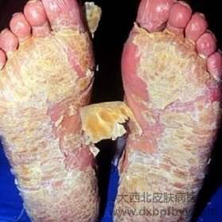 |
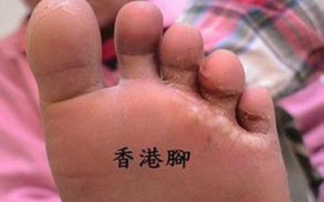 |
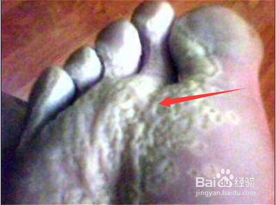 |
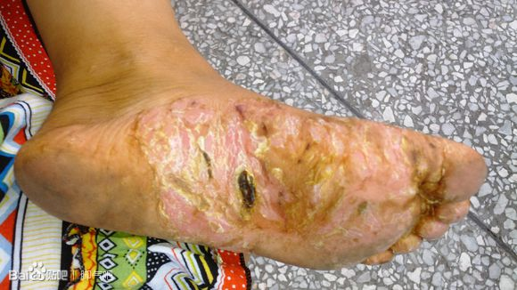 |
| 权威报告预测 |
官方销售电话：400-8384-885（全国免费电话） |
随着社会的进步和肉食消费结构的不断优化，对鸡肉的需求量必将増加。鸡肉的人均占有量会逐步有所提高。
一一选自《2012-2016年中国鸡肉市场分析预测与投资方向研究报告》。
|
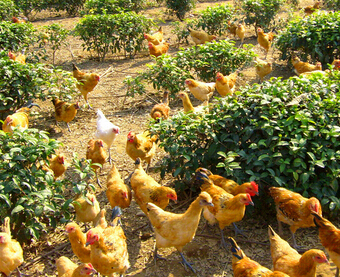 |
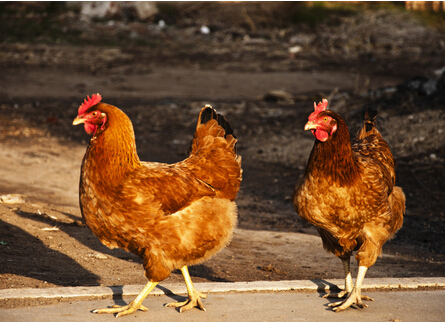 |
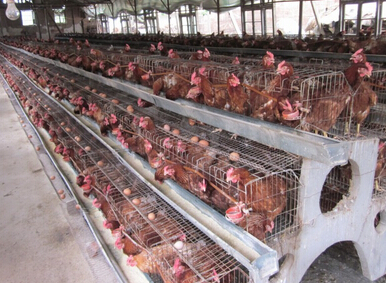 |
|
为什么有人养鸡可以年赚百万？
----------------你养鸡却一年比一年效益差？----------------
养鸡经济效益差其实就是下面几个原因
| 1、 想养鸡发财致富却不知如何下手？ |
9、 不知道为什么有人养鸡会赚钱，而有人会亏本？ |
| 2、 想养鸡，但是却没有技术，不知道如何去规模化的养鸡呢？ |
10、 不知道大棚如何养鸡？ |
| 3、 不知道养一只鸡能赚多少钱？ |
11、 不知道果圆/林地/山坡/草原又如何养鸡？ |
| 4、 不知道一只鸡一生会吃多少饲料？ |
12、 不知道要引进什么样的品种？ |
| 5、 不知道鸡的饲养周期是多少天？ |
13、 不知道如何管理自已的鸡场，即轻松快乐又效益高？ |
| 6、 不知道如何配养鸡饲料？ |
14、 不知道什么是竹林规模化养鸡？ |
| 7、 不知道建什么样的鸡舍投资少，而使用效果最好？ |
15、 不知道如何养鸡才能稳赚不赔？ |
| 8、 不如道如何让鸡不得病或者少得病？ |
16、 为什么你养鸡这么辛苦，却不赚钱？ |
很多时候我们做事情之所以感觉难，就是因为没有掌握正确的方法，方法对了，就能达到事半功倍的效果，结果就一定很好！
| 首先让我们分析一下养鸡失败的原因： |
1、养鸡品种没选好
品种是提高养鸡经济效益的首要条件，品种的好坏直接决定了鸡的产蛋量、饲料消耗量、饲养周期和料肉比等。众多试验表明，喂养优良的鸡，可使母鸡产蛋量增加10%?30%，饲料利用率提高10%?15%以上。 |
2、饲料搭配不合理
饲料是养鸡的基础，是养鸡成败的关键因素。通常饲料费用占养鸡成本的70%?80%,所以怎样合理地选择、利用、开发饲料，提高饲料报酬率，降低耗料率，对提高养鸡的经济效益起到决定性的作用。
|
3、鸡病防治不到位
鸡瘟，是由副粘病毒引起的一种主要侵害鸡和火鸡的急性、高度接触性和高度毁灭性的疾病。冬季的一个流行性瘟疫，造成的直接损失就是几十万元；而鸡肉价格如果每千克降1元，仅相当于流行性瘟疫造成损失的五分之一。
|
4、鸡场管理不科学
饲养管理好的鸡场，可以节约饲料，避免饲料浪费，使投入的饲料最大限度转化为鸡的产蛋量；饲养管理好的鸡场，鸡瘟发生的少，既可以节省疫苗购罝费用，又可以节约常规预防用药费用和治疗用药费用。 |
我们相信
有了《养鸡技术大全》
----------------养鸡年赚百万你，也可以！----------------
各位养殖兄弟姐妹往这看了：
如何减少养鸡风险，快速实现稳定盈利呢？请看下面的答案......
| 任何的成功一定有方法，失败也总有原因， 养鸡失败的原因,归根结底还在饲养技术管理上，没有掌握养鸡的关键技术就匆匆做起来了，殊不知，养殖这行业“要想富，先技术”! |
| 养殖业本来就是技术性比较强的行业，掌握了养鸡技术再去创业，不但可以减少风险，而且可以让你实现稳定赚钱的夙愿！ |
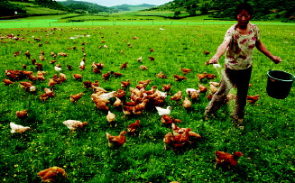 |
| 为了帮助正在准备进行养鸡、放弃现有养殖产品准备养鸡、养鸡专业户实现致富梦。我公司特与农业部农民科技教育培训中合作制作了一整套国内最先进的科学养鸡专业指导教程《养鸡技术大全》这套养殖技术教程是养鸡专业户必备的致富技术教程。对您养殖生鸡有很大的帮助及参考价值，绝对让您一次学习，受益终身。 |
|
这套养鸡系列视频教程为大型养殖场现场实景拍摄，系统讲解，实用养鸡核心技术，易学实用。是低成本、高产出、科学养鸡的专业指导教程。也是一整套养鸡致富的专业教材。帮你在养鸡致富路上快速、稳定、低风险的赚大钱！
学完这套教程，你可以做到：
不再小农户式的养殖，而是规模养殖，这套饲养技术可以大大减少你的风险，利用饲养规模来倍增你的利润，树立品牌，让你科学的养出规模，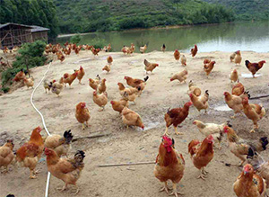养出效益。
掌握养鸡的关键环节，养鸡的场地如何选择？养鸡雏苗如何选购？养鸡场如何管理？养鸡疾病如何防御等。
让你科学的养殖，把传统的养殖方式跟现代的饲养管理技术结合起来，快速养出效益。
详细快速的掌握养鸡育雏期的管理、育成期的管理、产蛋期的管理。
科学的制定出养鸡的饲养批次和出栏时间，保证市场的均衡供应，低风险的赚钱。
让你知道科学的养殖密度，最大化的管理和利用场地。
让你选择出合适的品种，合适的场地，合适的养殖模式。
怎样加强防疫，坚决杜绝恶性传染病的发生。
学会养鸡饲料配比技术。怎样灵活运用饲料标准，合理搭配饲料。以保证满足鸡在生长发育过程中对各种营养的需求，让鸡长得健康，品质有保障。
让你清楚的知道养鸡应该注意的几个关键环节，做到这几个环节，可以大大提高成活率，减少饲养成本。
学会科学的核算养鸡饲养的成本和利润，宏观调控饲养规模，计划投入和产出。
学会鲜活虫饲料的制作，使养出的鸡肉质鲜美、生长快、从而节约成本。 学会怎样养鸡让您的养殖成本一少再少。
掌握不同地区夏季养鸡饲养技术的要点。 学会不同地区冬季养鸡饲养技术的要点。
学会鸡舍如何修建，围栏修建的方法，怎样建鸡舍投资少，而使用效果最好。
科学的分配设备 料桶和饮水器，并进行合理的分布，从而提高养鸡饲养的均匀度和成活率。
知道养鸡如何做出品牌，如何做好养鸡产、供、销的环节，形成良性生产循环。
还有很多养鸡不为人知的核心技术 ……. |
| 以上所有养殖过程中遇到问题都将在《养鸡技术大全》里面一一为您解决 |
《养鸡技术大全》不但让您科学的养好鸡，而且让你快速的踏上致富路，是您实现养鸡创业致富的好帮手！
一经上市
----------------即受到养殖权威专家一致好评！----------------
《养鸡技术大全》解决养鸡难题，手把手教您快速致富！
|
中国农科院畜牧兽医研究所院士 《养鸡技术大全》主编 王安
这套技术是真正农民需要的三农力作
发酵床养鸡技术是养殖户真正需要的技术，这套技术可以使养鸡年均节省饲料10%左右，节水90%以上，节省劳力60%以上。清洁环境，鸡群健康，提高肉质，同时节省土地，排泄物真正达到零排放。诸多因素使得这套技术十分适合现代化养殖的发展，谁掌握了《养鸡技术大全》谁将终身受益。 |
|
|
中国农业大学动物科技学院院士 博士生导师 李振华
有了这套技术，养起鸡来绝对事半功倍
发酵床养鸡技术是一种无污染、零排放的有机农业技术，是利用人们周围自然环境里的生物资源。在经过特殊设计的鸡舍圼，填入上述有机填料，再将雏鸡放入鸡舍，让鸡从小到大都生活在这种有机垫料上面。生态科学养殖的鸡，在自然的状态下成长，养起鸡来绝对是事半功倍。
|
|
|
动物营养国家重点实验室主任 陈金鹏
值得向全国推广的养殖实用教材
农牧业者可以在目前的基设下生存。业者一定要勇于迈出旧框子，接受新的技术挑战，引用现有同业成功的 例子开发自己的新方向，来迎接未来的新挑战。《养鸡技术大全》不仅将生态养就带上一个新高度，帮助养鸡生产者提高科技水平和经济效益。这种方法，值得面向全国养鸡业推广！
|
|
|
教程效果固然重要，但更重要的是学习结束后，带着养鸡新技术的启迪，新的感悟，以前所未有的激情和期待，投入到一段惊心动魄的创业旅程，5个月后，迎接他们的是连自己都难以置信的人生飞跃！
如此震撼的养鸡教程，学习者的看法如何呢？他们5个月后的结果怎样呢？下面就让我来介绍你认识几位具有代表性的学习者，由他们亲自向你描述他们的感想和5个月来的变化…… |
|
光想养鸡行不通，会技术才是硬道理 山东省鄄城县一一李翔
大学毕业后的我以前在天津一家化工厂打工，收入一直不高。2000年，我回老家时到一个养鸡的朋友家玩，偶然受到一件事情的启发，让我发现了养鸡行业的商机，于是我四处借钱，一共筹集了20万元打算建一个养鸡场，但眼瞅着鸡舍一天天建成，我这个没有技术，没有经验的养鸡场场长倒是为难了。
经朋友介绍买了《养鸡技术大全》,这下可少走了不少弯路。第一批购进的200只雏鸡以100%的出栏率全部销售，我尝到了养鸡的甜头，后期逐渐的扩大了规模，并且建立起销售渠道，利润一年比一年高。由于有科学养殖方式的指导，2009年，已有20余家饭店开始和我合作，我的肉鸡卖到了青岛、烟台等十几个城市，每年销售约12000只。我的年销售额达到了200万元。获得了丰厚利益的同时，我成为当地的先进劳动个人，带领全村一起致富。 |
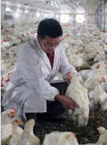 |
|
|
从“养鸡大王”到农民致富“领头鸡”的蜕变 四川省广元市中江县 李余宇
我出生在一个贫困的家庭，初中毕业后就辍学南下打工，自小尝尽贫穷滋味，但心里依然充满着希望。后来我回乡开始卖鸡，从此迈出了我养鸡事业的第一步。我每天挑着竹笼，走村串户收购家鸡上集市卖。多年的贩鸡生涯使我最终明白一个道理：必须掌握鸡源才能掌握市场。于是，我借钱办起了养鸡场。可我的第一批鸡苗不到一个月就死了一半。
我并没有灰心，四处找寻养殖技术，就是这套《养鸡技术大全》就了我的财富梦想，这套技术对选址、开建、消毒、选苗等提供“一条龙”技术服务指导。一直以来我始终着力于肉鸡品质，始终坚持发酵床养殖技术，确保绿色生态养殖、不带任何人工激素和添加剂。到2011年，我存栏肉鸡达10万只，年出栏200万只，年产值2500万元。我还开展技术培训了很多人。在我指导下，养殖成活率达到99%，从未有出现过因疫病而大面积死鸡现象。
后来我发展了合作社，社员发展到150多户，后期投资1600万元建成年出栏5万羽以上的规模化标准养鸡场40家，有大小养殖棚250个，服务范围遍布湘粵两省12个乡镇，产品销售到韶关、深圳、清远、广州、郴州等地，年出栏商品鸡200万羽以上，创产值3000万元。 |
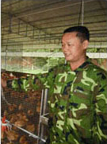 |
|
|
张敏芳一一巾帼不让须眉的养鸡传奇 山东烟台——张敏芳
当初我可是对养鸡一无所知，仅是听别人说养鸡能赚钱，就“一头扎进去”，一下子养了500只蛋鸡。我和老伴小心翼翼地看护这批鸡，憧憬着未来。没想到一场鸡瘟，仅剩下200余只，第一次养鸡就失败了。我不甘心，决定再养一年。 于是我又进了第二批鸡雏。这一次，我开始学习科学养殖的教材一一《养鸡技术大全》，从现代发教床养殖和科学防疫技术学起，加上在实践中的思考摸索，第二批鸡雏，我赚了一万多元。从此，我就认定了养鸡这条致富路。
小规模养殖当然不能满足我的追求，为了实现规模养殖的梦想，我不断添加学习新技术，在《养鸡技术大全》中吸收精华，扩大养殖规模，先后投资50多万元，建起了集孵化、养殖、销售为一体的现代养鸡场。如今，我不但靠卖鸡蛋 赚钱，孵化卖雏的效益更是可观。 |
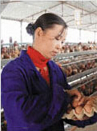 |
|
|
弃置小厂养肉鸡 牺牲“钱途”换前途 福建光泽 崇仁乡--李鹏举
我原在浙江打工，开有自己的皮鞋外包装加工厂，年收入30万元左右，常年有近80个工人作业、去年初我们村刘支书告诉我家乡正搞开发，动员我回家发展突击养殖。现如今土鸡市场广阔，行情可观，可以大力发展。余数，我放弃了浙江的皮鞋外包装加工厂，毅然回乡投资建场养土鸡。刘书记推荐了我一套养殖技术，我将原来的加工厂卖掉，兴建了自己的鸡舍，全部是利用最新的发酵床养鸡技术。这套技术减少疾病发生，增强了鸡的抵抗力，减少药物使用量，成活率高，自然成本就降下来了。
单只是在去年市场普遍不景气的情况下，我的养殖场养殖鸡蛋规模1万羽，年产鲜蛋80万公斤，年创产值仍高达500多万元。真是多亏了《养鸡技术大全》对我的帮助，发酵床养鸡技术是值得推荐的好方法，是农民创业的好帮手啊。 |
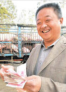 |
|
|
不甘“死工资” 创业走出来的致富带头人 哈尔滨三河镇--张晓涛
大学毕业以后，我被分配到了分配在当地棉花储备库做文员，那个时候，农村出身的我日子过得很清贫。后来， 我总想着做-点自己的事。因为一个偶然的机遇，我踏进养鸡行业，只用了短短两年时间就打了翻身仗。
这多亏了《养鸡技术大全》，这两年我按照《养鸡技术大全》里面讲解的方法养鸡，这套好技术，使的养鸡的利润十分可观，仅仅两年的时间，债务还清了，每年还能个赚30来万。经过科学的养殖方法，第二年的产蛋量是第一年的两倍，肉鸡出栏量更是翻了两番。更让我高兴的是，原本反对我的父母，现在也主动到养殖场，当起了饲养员。如今我已经渐渐的扩大了规模，并且通过养殖技术帮助了大量想要创业的年轻人。 |
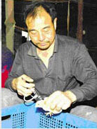 |
|
| 很显然，现场视频教学内容，不可能在这个网页里作最全面的介绍，所以，我们在此仅仅展示教程光盘中一些典型的技术片段。相信通过这些片断，你就能对整个大容量内存卡， 的养鸡技术有一个轮廓性的认识…… |
《养鸡技术大全》教您如何快速盈利，快速成功！
规模化养鸡
|
比由特火鸡饲养管理技术
|
| 鸡种的选择 |
乌鸡优良品种及饲养
|
| 鸡场规划与鸡舍建造 |
怎样办好一个乌鸡养殖场
|
| 环境控制 |
乌鸡养殖技术
|
| 种鸡选种与饲养管理 |
火鸡养殖技术
|
| 良种乌骨鸡饲养 |
孵化技术
|
| 商品蛋鸡的饲养管理 |
设施养鸡（大棚养鸡）
|
| 优质肉鸡的饲养管理 |
绿壳蛋鸡养殖新技术
|
| 营养与饲料 |
特种鸡饲养
|
| 卫生管理与疾病防治 |
蛋鸡增效要点 |
肉鸡养殖技术套装
|
雏鸡、蛋鸡的饲养与管理
|
蛋鸡养殖技术大全
|
良种蛋鸡科学饲养配套技术
|
科学养鸡系列
|
怎样办好一个蛋鸡养殖场
|
良种肉鸡配套饲养技术
|
怎样办好一个肉鸡养殖场
|
| 疫苗与疾病防治 |
农家养鸡技术，（果圆/林地/山坡/草原）
|
养鸡技术
|
山区柴鸡饲养
|
养禽学
|
高产蛋鸡的生产管理
|
山鸡养殖（野鸡养殖技术）
|
绿色肉鸡配套笼养技术、肉鸡养殖技术
|
七彩山鸡饲养技术
|
无公害竹林规模化养鸡
|
发酵床养鸡技术
|
塑料大棚养鸡技术
|
规模化蝇蛆养鸡最新养殖技术
|
竹林规模化散养鸡技术
|
大棚立体笼养蛋鸡技术
|
黄羽麻花鸡养殖技术
|
北京油鸡的养殖技术
|
三黄鸡的养殖技术
|
乌鸡养殖技术
|
乌鸡优质高产新技术
|
山区柴鸡养殖技术
|
山鸡养殖技术
|
珍珠鸡，珍禽山鸡的养殖技术
|
火鸡养殖技术
|
比由特火鸡饲养管理技术
|
笨鸡的饲养管理技术
|
无公害肉鸡生产技术规范
|
怎样办好一个肉鸡养殖场
|
规模化肉鸡养殖技术
|
肉鸡的饲养管理与屠宰
|
绿色肉鸡配套笼养技术，肉鸡养殖技术
|
节粮型蛋鸡的饲养与管理
|
蛋鸡增效要点
|
蛋鸡饲养新技术
|
鸡孵化技术，夏季维持蛋鸡稳产高产技术
|
人工孵化技术
|
严重影响鸡产蛋量疾病的控制
|
简易节能开放型鸡舍
|
鸡病防治专题讲座
|
高致病性禽流感疫情处置技术规范
|
|
| 这套教程从养鸡品种的选择，场地的选择，不同时期的饲养管理、养鸡场的防疫消毒方法和程序、常见鸡病的发现和管理，鸡饲料的配置以及简易节能鸡场的建设等等，全面讲解了养鸡的技术管理要点，是您养鸡致富的宝贵教程。 |
| 但是，99％的人对赚钱有两大不可饶恕的误区，他们想快速致富却又不愿意投资最有效方法，花费较多的时间在痛苦中摸索，本来想省钱，结果不但没有省到钱，反而浪费了大量的时间；也有的认为赚钱必须得有资本，因此他们等待，他们再等待，直到今天，依然贫穷！毫无疑问，资本能够帮助你成功，但它绝对不是最重要的元素，更不是你不可或缺的元素。你最重要的不可或缺的元素不是别的，而是……想法和技能，有创意的想法和成功实践的技能！ |
| OK,相信这些片断让你对这套教程，有了更深刻的认识。我有两个问题要问你…… |
“你也渴望拥有这套教程吗？
如果你呆在家里就能快速的掌握养鸡的核心技术，
你愿意付出什么样的价格？”
| 甭提价格，让我先来告诉你，如果你决定购买这套教程，你将得到什么。具体来说，你将得到： |
|
| 部分目录展示：(由于篇幅有限，只展示部分目录) |
第一章鸡的品种
第一节我国的地方品种资源
一、仙居鸡
二、固始鸡
三、萧山鸡
四、寿光鸡
五、浦东鸡
六、北京油鸡
七、惠阳鸡
八、桃源鸡
九、鹿苑鸡
第二节育成现代商品杂交鸡的标准品种
一、单冠白来航鸡
二、洛岛红鸡
三、横斑洛克鸡
四、新汉夏鸡
五、白科尼什
六、白洛克
七、浅花苏赛斯
第三节现代商品杂交鸡
一、蛋鸡品种
二、肉鸡品种
第二章鸡的繁殖与孵化技
第一节鸡的繁殖技术
一、鸡的生殖器官
二、蛋的构造、形成和产出
三、鸡的自然交配
四、鸡的人工授精
第二节种蛋的孵化
一、鸡的孵化期
二、种鸡蛋孵化中的三个危险期
三、种蛋的注意事项
四、种蛋孵化的条件
五、孵化方法
第三章鸡的营养与生态饲养 |
第一节鸡的营养需要
一、鸡的消化与代谢特点
二、鸡需要的营养素
第二节鸡的饲料与饲粮配合
一、鸡的常用饲料
二、鸡的饲养标准
三、配合饲粮的方法
四、生态饲料
第三节绿色生态饲养模式
一、果园放养鸡的饲养管理
二、树林放养鸡的饲养管理
三、滩区放养鸡的饲养管理
四、围圈放养鸡的饲养管理
第四章肉鸡生产
第一节肉用仔鸡生产
一、肉用仔鸡的饲养管理技术
二、优质黄羽肉鸡生产
第二节肉用种鸡生产
一、育雏期的饲养管理要点
二、育成期的饲养管理
三、产蛋期的饲养管理
第五章蛋鸡生产
第一节蛋鸡的育雏与育成
一、蛋鸡的育雏技术
二、育成鸡的饲养管理
第二节蛋用种鸡的饲养管理
一、蛋用种鸡的管理方式
二、蛋用种鸡的饲养管理要点
第六章鸡舍的建设与高效管理
第一节鸡场建设
一、场址选择
二、鸡舍建筑
第二节养鸡设备
一、饲养设备
二、环境控制设备 |
三、其他设备
第七章鸡常见疾病与防治
第一节鸡传染性疾病
一、鸡白痢
二、鸡伤寒
三、禽副伤寒
四、禽霍乱
五、禽大肠杆菌病
六、禽葡萄球菌病
七、新城疫
八、鸡传染性法氏囊病
九、鸡马立克氏病
十、禽传染性脑脊髓炎
第二节鸡寄生虫病
一、球虫病
二、组织滴虫病
三、住白细胞虫病
四、绦虫病
五、蛔虫病
六、禽隐孢子虫病
七、异刺线虫病
八、前殖吸虫病
九、外寄生虫病
第三节鸡中毒病
一、食盐中毒
二、一氧化碳中毒
三、硫酸铜中毒
四、高锰酸钾中毒
五、磺胺类药物中毒
六、喹乙醇中毒
七、呋喃类药物中毒
八、亚硝酸盐中毒
九、棉籽饼中毒 |
|
《养鸡技术大全》适合哪些人?
本套教程适用于所有的养鸡场技术管理人员、养鸡的个体户，还有基层的畜牧工作者，以及想投资养鸡的人员。
其实你我都知道，世界上没有任何产品适合任何人，也许这个被无数成功者验证过的教程也不一定适合你，它的价值仅仅属于慧眼识货的人，属于渴望成功并坚持学完全部资料，积极实践的人，因为他们知道成功的分量有多重。因此，如果你愿意持续贫穷；如果你愿意持续迷茫；如果你愿意持续被竞争对手不断超越，那么这部产品不适合对成功没有渴望的人。 |
一站式讲解
详细的养鸡教学流程
----------------从0学起也不愁----------------
即使对养鸡技术知之甚少也可以轻松上手
| 本套养鸡技术教程为您详细从选种到出栏一站式讲解，内容包括养鸡的方方面面，自成一套学习系统，即使对养鸡技术知之甚少也可以轻松上手，免除您买完以后不知道从哪学习的后顾之忧。 |
| 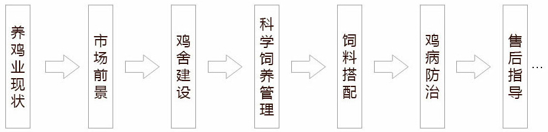 |
|
过底好不好？
一比就知道
----------------那就让我们看一下----------------
《养鸡技术大全》与其他养殖技术的比较结果
| |
养殖类丛书 |
专家培训讲座 |
普通养殖视频
|
《养鸡技术大全》
|
| 权威 |
多为大学教授主编，但内容原创性无法考究。 |
专家虽是经验丰富，但受到具体实际操作的限制。 |
找专家代言，内容抄袭，有可能是劣质盗版。
|
CCTV农业频道推出的农广天地系列影碟之一。由农业部科教中心和中央农业广电学校联合制作。 |
| 内容 |
内容枯燥乏味，专业术语多很难读懂理解，很难从中得到有用的信息。
|
内容广泛，专业性强，但缺乏深度，问题针对性不强。 |
不是过于繁杂就是太简单，找不到自己需要的内容。
|
从鸡场选址、选种到出栏，一站式讲解，免去养殖户的一切后顾之忧。 |
| 效果 |
看不懂，理解不了，就根本没有办法进行实际操作，自然不会有太大效果。
|
当时觉得很有道理，但没有具体问题具体分析，效果不理想。 |
读稿式的讲解，内容不细化听完以后还是一头雾水。
|
内容通俗易懂，画面清晰，全部用最直接、最普通的语言为用户讲解，即使毫无养殖经验也可以轻松上手。 |
| 服务 |
卖出去就完事，完全就是一锤子买卖，不管不问。 |
无 |
后期没有技术服务。遇到难题，养殖户还是没有办法解决。 |
拥有强大的售后技术服务团队，技术交流，疑难问题专家解答。
|
|
无法比拟的优势
《养鸡技术大全》
----------------有其他产品无法比拟的6大优势----------------
我们倡导的
不是一锤子买卖
我们本着
认真负责，帮助广大养鸡户走上
致富之路的态度
让您安心进行养鸡事业，
解除后顾之忧！
近日不少个人商家仿制甚至盗用我网站内容制作成盗版劣质产品在各大搜索引擎上销售，为了避免上当受骗，各位消费者朋友在购买时请认真识别真伪。官方网站正版产品《养鸡技术大全》产品具有防伪标志。
全国统一订购热线为：400-8384-885
在此本公司做出五点声明：
1、最新农业致富宝典系列《养鸡技术大全》只有本公司独家生产及销售，从未授权给其他公司和人员进行生产。
2、任何公司和个人生产和销售假冒《养鸡技术大全》产品均属违法行为，本公司将对其侵权行为进行调查，并进一步追究其法律责任。
3、欢迎广大用户对不法行为监督举报。对于提供线索并能协助查获模具的相关人员，本公司将给予奖励。
4、因购买盗版《养鸡技术大全》造成养殖户经济损失，本公司概不负责。
5、本公司拥有最终解释权。 |
|
特别强调
这不是一般的技术学习资料
--------它已经让千万人走进了成功的殿堂--------
也可能改变你的命运
在中国，千万养鸡户正在疯狂地购买这套产品
你可以选择不屑一顾，也可以选择积极行动
只要你努力去实践
这套产品将助你走上致富的快车道
如果这套产品能从此改变你的命运
你愿意尝试吗？
只要你掌握了这套养鸡技术
就能以比普通人快50倍的速度去实现你的梦想！
| |
| ★ |
1：这个教程分地区吗？我们这里的养鸡适合吗？ |
| |
答：这套教程包括并适合全国各地养鸡品种的饲养管理，大多的饲养管理环节是一样的，但对不同养殖技术管理的养鸡品种，又分出来单独的进行讲解，几乎涵盖了全国各地养鸡品种的饲养管理，是学习养鸡技术的全套百科教程，助你快速走上养鸡致富路！ |
| ★ |
2：视频教程质量有保障吗？ |
| |
答：我们采用顶级大容量光盘压缩技术制作，所有光盘均经软件和人工严格测试合格、方予发出。如有极个别顾客由于机器的兼容性问题，无法读盘，我方付快递费，重新快递教程。 |
| ★ |
3：高清视频清晰吗？ |
| |
答：视频都是720P高清画质，分辨率为720*576，平时我们看的影片分辨率也不过640*480。所以，清晰度您完全不用担心。 |
| ★ |
4：如果产品达不到我的满意怎么办？ |
| |
答：网站介绍的和邮递给您的产品是一样的，有一点不一样您都完全可以拒收或者退货的，我们也会立刻无条件全额退还您的货款！但是这种现象从来没有发生过，因为教程的内容都是货真价实的，几乎涵盖了所有的养鸡秘诀。您放心好了！！
另外，您拿到货后还有30天的时间验证教程的价值，如果30天后您确认教程不能让您的养鸡技能有所提高，您只需把产品退给我们，我们会一分不少的退款给您！毕竟有用的产品应该留给有需要的人。 |
| ★ |
5：可以先验货再付款吗？ |
| |
答：当然可以，我们产品的质量是绝对保证的，而且还有服务的，在产品里面有服务电话的，有任何需要帮助的都是可以打电话的，放心吧，我们对客户都是认真负责的
我们卖的不仅是教程，还有服务，更是交朋友。
收到货后还有一个月的跟踪服务的，帮助您更好的用好教程，我们全国服务电话4008384885 |
| ★ |
6：教程是纸质的书还是视频？ |
| |
答：教程是视频+书籍配合学习的形式。视频部分是现场培训的教程，书籍是配套教材，视频教学+书籍教学相结合效果才是最好的。如果您想快速学习养鸡技术，选择我们这套教材会让您事半功倍。 |
| ★ |
7：价格还可以优惠吗？ |
| |
答：我理解你的想法，我觉得您关心的不是唯一的价格，而是教程带给您的价值是否远远的超过这个价格，您知道的养鸡就是一个技术活，一个新技术的运用，至少会降低饲养风险和提高利润上千元的，如果这套教程让你彻底的养好鸡，快速高效的倍增利润，298元对您来说还是超值的，您说呢？
其实，很多客户还说便宜呢，因为单独参加学习要好几千的！
投资298学习，价格连3只养鸡的利润都不到，而且技术学会是永远的。 |
| ★ |
8：下订单后多长时间可以到货？ |
| |
答：对顺丰快递可以送达的，一般1-3天就可以到货，顺丰快不到的乡镇级村地区，我们会给您安排发邮政快递一般3-7天可以送到。 |
|
|
科技下乡
原价：998元，立刻订购，仅需科技下乡价：298元
--------活动仅限10天！活动结束即刻恢复原价-------
在线订购